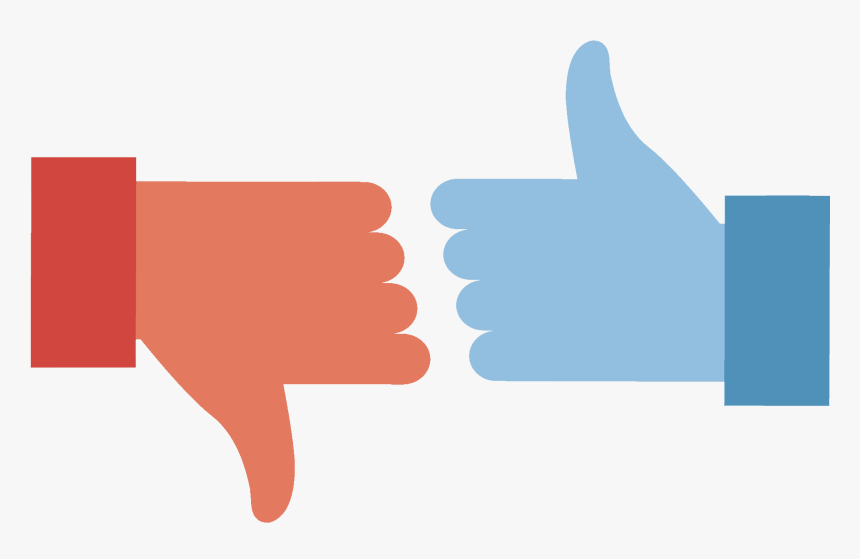
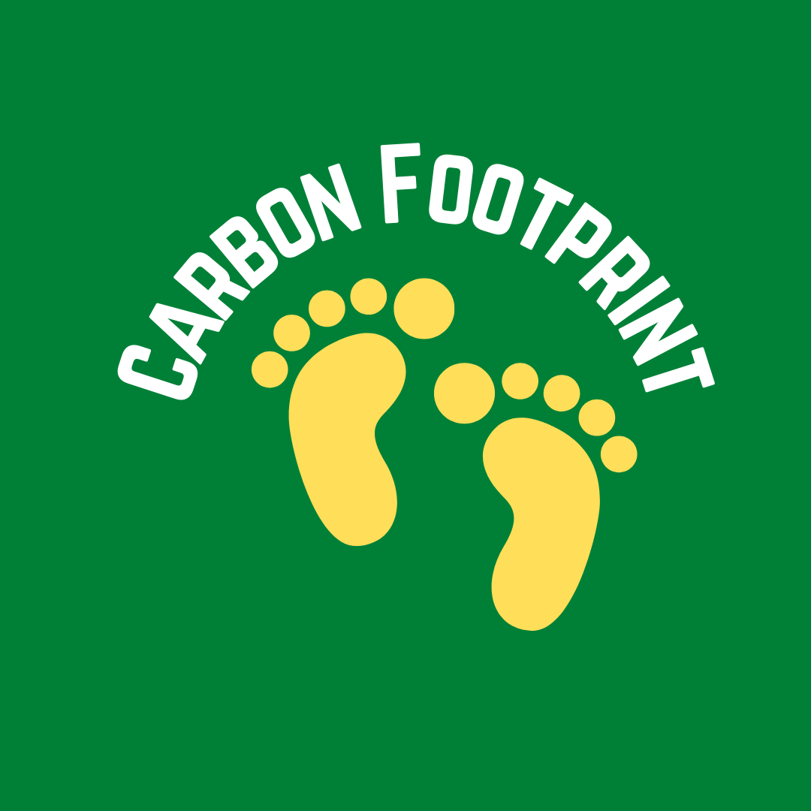

Sravani Somepalli
Hello!
I am a Master's student in Business Analytics at the University of California, Irvine. My recent courseworks include implementing transformer based models for sentiment analysis, deploying a carbon emission calculator chatbot for KPMG as part of their Carbon Neutral initiative. I worked as Conversational AI coach for "Fundamentals of AI" course(Jan 2022 - June 2022) with UCI Executive Education.
Before starting my Master's, I worked in industry for 6 years in various data analytics and application development roles and received my bachelors in Computer Science and Engineering. I've wide experience in handling cross-functional teams through Agile development.
I'm the President of Analytics Club at UCI(2021-2022) and hosted multiple events to help the students learn about new trends in Data Science, Machine learning and Analytics.
Recent News
- May 2022: Delivered Capstone project to KPMG.
- Apr 2022: Attended USC Annual Business Analytics Symposium as Panelist
- Apr 2022: Organised Hackathon in collaboration with SoCalRUG
- Jan 2022: Started working as Conversational AI Coach
- Jan 2022: Started my Capstone Project with KPMG
- Oct 2021: Delivered Food Carbon Calculator chatbot at "Florida Hacks with IBM" event
- Sep 2021: Attended Grace Hopper event
- Aug 2021: Selected as the President of Analytics Club - UCI (2021-22)
- July 2021: Started my Masters in Business Analytics at UCI
Project Highlights

|
Carbon emission calculator - UCI KPMG Capstone
Capstone 2022
Calculated the carbon emissions of KPMG employee vehicles and deployed the chatbot to achieve their Carbon Neutral goal
Sravani Somepalli
|
|  |
How accurate will our prediction be with bert base cased. Tweets were predicted in two classes. Applied the selected model on never seen tweets.
Sravani Somepalli
|

|
Classifying Forest Covertype dataset
March 2022
XGBoost classifier on Forest Covertype dataset with sample re-weighting. Performed hyperparameter
tuning with Amazon Auto-Gluon.
Sravani Somepalli
|
|  |
Carbon footprint
due to
Food Production
Florida Hacks with IBM 2021
Developed a virtual chatbot using Watson Assistant to process the natural language queries and answer the
carbon emission details of food production life-cycle
Sravani Somepalli
|